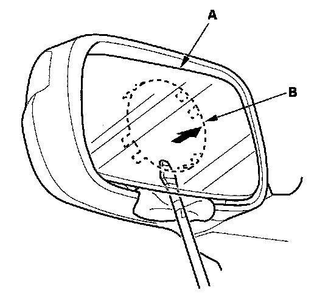
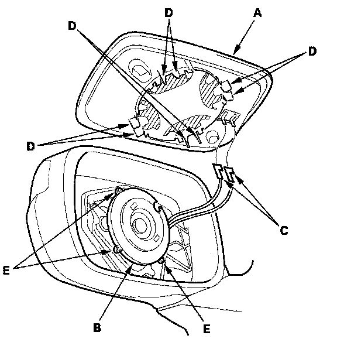

Mirror Holder
Mirror Holder ReplacementNOTE: When prying with a flat-tipped screwdriver, wrap it with protective tape to prevent damage.
1. Adjust the mirror fully to the upward position.

2. Insert a long, thin flat-tipped screwdriver under the mirror holder (A). Slide the tip of the screwdriver between the mirror holder and the actuator (B).
3. Quickly twist the screwdriver to separate the mirror holder from the mirror actuator.
4. Insert the screwdriver further under the mirror holder and twist it again.
NOTE: Do not pry up on the mirror holder to separate the two parts, as this can cause either the mirror glass or actuator to break.

5. Separate the mirror holder (A) from the actuator (B). Disconnect the mirror defogger connectors (C) from the heater pad terminals.
6. Reconnect the mirror defogger connector.
7. Align the tabs (D) on the mirror holder so they line up on each side of the actuator tabs (E). Carefully push on the mirror holder until it locks into place.
8. Check the operation of the actuator.